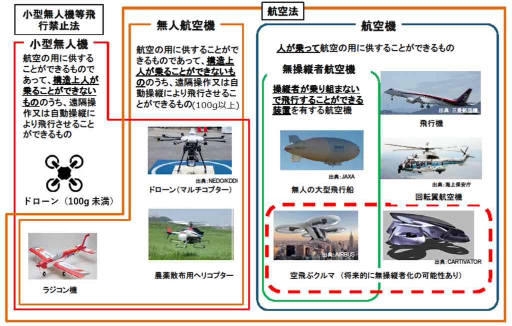

無人航空機の定義
航空法において、「無人航空機」とは、以下の3つの条件を満たすものを指します。
- 航空の用に供することができる飛行機、回転翼航空機、滑空機及び飛行船であって構造上人が乗る事ができないもの。
- 遠隔操作又は自動操縦により飛行させる事ができるもの。
- 重量が100グラム以上のもの。
航空法における無人航空機の定義と飛行のルールを解説します。
航空法において、「無人航空機」とは、以下の3つの条件を満たすものを指します。
重量が100グラム未満のものを除く全ての無人航空機は、原則として国の登録が必要です。
登録の有効期間は3年で、無人航空機を識別するための登録記号の表示と、一部の例外を除きリモートID機能を備えなければなりません。

航空法において、無人航空機の飛行に当たって確保すべき安全は、航空機の航行の安全と、地上又は水上の人又は物件の安全です。